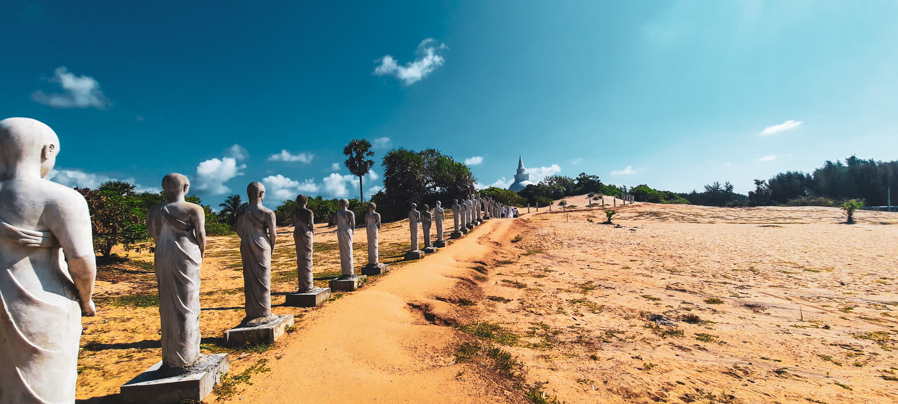

The Eastern Province is one of the nine provinces of Sri Lanka, the first level administrative division of the country.
The provinces have existed since the 19th century but did not have any legal status until 1987 when the 13th Amendment to
the Constitution of Sri Lanka established provincial councils.
Between 1988 and 2006 the province was temporarily merged with the Northern Province to form the North Eastern Province. The capital of the province is Trincomalee.
1. Arugam Bay
Arugam Bay, known locally as "Arugam Kudah", is situated on the Indian Ocean in the dry zone of Sri Lanka's southeast
coast, and a historic settlement of the ancient Batticaloa Territory (Mattakallappu Desam). The bay is located 117 kilometres
(73 mi) south of Batticaloa, 320 kilometres (200 mi) due east of Colombo, and approximately 4 kilometres (2.5 mi) south of the market
town of Pottuvil. The main settlement in the area, known locally as Ullae, is predominantly Muslim,[1] however there is a significant
Sri Lankan Tamil and Sinhala population to the south of the village, as well as a number of international expatriates, largely from
Europe and Australia.
While traditionally fishing has dominated the local economy, tourism has grown rapidly in the area in recent years.
Arugam Kudah's literal Tamil translation is "Bay of Cynodon dactylon". Tourism in Arugam Bay is dominated by surf tourism,
thanks to several quality breaks in the area, however tourists are also attracted by the local beaches, lagoons, historic temples
and the nearby Kumana National Park.
During the period of fighting between the central government and Tamil separatists tourism was fairly low key and the hotels often bought
the catch of the fishermen. As a result of the peace, tourism expanded and many fishing people who had moved to areas less touched by
the conflict returned. Hotel owners began to complain about the smell of drying fish and how the fishing huts blocked their view.
In the aftermath of the Tsunami fishing people were forbidden to return, officially on
the grounds of safety but allegedly as a result of pressure from the hotel owners
The nearby (4 kilometres (2.5 mi)) Muslim village of Pottuvil is the center of commerce and transportation while tourist accommodations
lie along the beach to the south of Pottuvil Arugam Bay (4 kilometres (2.5 mi)) is also the gateway and the only road access to the Yala
East National Park. In 2.2 kilometres (1.4 mi) distance there is Pasarichenai Beach. This area is known as Kumana (44 kilometres (27 mi)),
to be reached via the Tamil/Sinhalese settlement of Panama (Sri Lanka) (17 kilometres (11 mi)) and the Tamil shires at Okanda
(32 kilometres (20 mi)).
The local area is home to a number of elephants, often travelling between Lahugala and Kumana national parks
2. Muhudu Maha Viharaya

Muhudu Maha Vihara is a Buddhist temple at Pottuvil in Ampara District, Eastern pro
vince of Sri Lanka. This temple, near a wide beach, was built over 2000 years ago by K
ing Kavan Tissa of Ruhuna. The ruins and remains of ancient stupas, Seema Malaka, Avasa Geya and sta
tues can be seen at the site. Important ruins at the temple premises include stone statues of Buddha and two statues of old kings or
gods.This viharaya marks the landing place of Viharamahadevi, daughter of Kelani Tissa, who was destined to become the queen o
f King Kavan Tissa of the Rohana kingdom.According to the ancient chronicle Rajavaliya, it is stated that in the second century
BC after Kelaniya was submerged by the sea due to a natural disaster, Devi the daughter of King of Kelaniya was cast to sea in a
Golden Vessel to appease the gods, and washed ashore near the Muhudu Maha Vihara in Pottuwil
. Later she became the main consort of king Kavan Tissa of Ruhuna Kingdom, under the name Viharamahadevi.
Muslim settlements
In recent times the lands reserved for the temple have been forcibly taken over by Muslims with the alleged support of Muslim
politicians such as M. L. A. M Hizbullah. According to the Monks of temple as of 2019 out of the 72 acres of the temple 55 acres
have been forcibly taken over by Islamic extremists including those that are affiliated with the National Thowheeth Jama'ath.
The road leading to the temple was renamed with the Arabic name "Masjithul Palah Road" while Monks living in the temple had been
harmed and devotees harassed. Further several ruins including moonstones had been vandalised by Muslims.
In August 2019 the National Movement of Sinhale staged a protest outside the ministry of Buddhasasana against the attack on a
Buddhist monk of the Muhudu Maha Viharaya.
In May 2020 Prime Minister Mahinda Rajapaksa directed defence officials to investigate the situation which resulted in
Defence Secretary Kamal Gunaratna, Army Commander Shavendra Silva, Navy Commander Piyal De Silva, acting IGP C. D Wickremeratne
touring the temple premises.
3. Nilaveli Beach
Nilaveli is a coastal resort town and suburb of the Trincomalee District, Sri Lanka located 16 km northwest of the city of Trincomalee.
A historically popular Tamil village and tourist destination of the district alongside the nearby Uppuveli, the numbers of visitors
declined following the 2004 Indian Ocean tsunami and Sri Lankan Civil War, but have risen again since 2010. Pigeon Island National
Park, one of the two marine national parks of the region is situated 1 km off the co
ast of Nilaveli, its many species of vegetation, coral and reef fish contributing to Nilaveli's rich biodiversity.
Is a stretch of beach which is situated approximately 16 kilometres North of Trincomalle,
passing a thriving lagoon on either side and lush coconut palm groves and hordes of cattle,
note that the people in the area are predominantly Hindu and consider the cows sacred. Arriving
at the hamlet of “Errakkandy”, a sharp right turn will take you down a gravel road to Nilaweli beach,
almost a kilometre of in lenght, white sandy beach with gentle surf.
Across the beach about two kilometres
into the ocean you will see the famous pigeon island, named due to rock pigeons roosting on it by the hundreds and crystal clear water a
round it to snorkel on to the clear depths of a reef. Further up North you will see a cluster of reddish rocks which are referred to as
the red rock beach.
Strolling along the Nilaveli Beach’s stretch of golden sand and azure waters that goes for more than a kilometre allows you to reflect
on the exotic beauty of the country, while also partaking in some exhilarating water sports. The beach is known for being a hub for
scuba diving, snorkelling, fishing, and, of course, swimming. In addition to the many water sports activities, you could also partake
in an excursion to the Pigeon Island National Park that is a short boat ride away. You could easily immerse yourself in the rare and
endemic marine life around the island.
4. Velgam Vehera
Velgam Vehera (also known as Vilgam Rajamaha Viharaya) (Sinhala: වෙල්ගම් වෙහෙර) is a historical Buddhist temple situated in Kanniya,
Trincomalee District, Sri Lanka. It also known to Hindus as Natanar Kovil. Historically Velgam Vehera was one of important Buddhist
temples in the country, worshiped by both Sinhala and Tamil Buddhists.
The temple has been declared as an archaeological protected site in Trincomalee District by Sri Lanka Archaeological Department.
This temple is believed to be built during the reign of King Devanampiyathissa (307–267 BC) with later renovations haven been undertaken
by King Bathiya I, Agkbo II, Vijayabahu I and Parakramabahu I. An inscription found in the temple was written during the reign
of King Bhatika Tissa (141-165 AD).
The inscription mentions revenue from certain fields to the Abagara Vihara (Velgam Vihara) and Velga
ma by the king's commander, Abaya.Following the collapse of the Anuradhapura and Polonnaruwa Kingdoms the population migrated to the
southern part of country, which resulted in the temple being abandoned and falling into ruin.
With the invasion of Cholas from India in 993 AD, many of Buddhist shines was destroyed in the country. Velgam Vihara however managed to
survive unscathed. The Cholas instead renovated the temple, adding their own structures and renamed it Rajarajaperumpalli, after
King Rajaraja Some of Tamil inscriptions found in the temple record donations to the temple made during the reigns of King Rajaraja and
Rajendradeva.
In 1929 the ruins of Velgam Vehera were discovered by the Sri Lanka Archaeological Department and in 1934 the site was declared as an
archaeological protected reserve.
Some of ruins have been scattered throughout the temple premises, these include stone inscriptions, brick dagobas, parts of the image
houses, korawak gal (balustrades) and plain mura gal (guard stones) and Moon stones.
.jpg) Arugam Bay, known locally as "Arugam Kudah", is situated on the Indian Ocean in the dry zone of Sri Lanka's southeast
coast, and a historic settlement of the ancient Batticaloa Territory (Mattakallappu Desam). The bay is located 117 kilometres
(73 mi) south of Batticaloa, 320 kilometres (200 mi) due east of Colombo, and approximately 4 kilometres (2.5 mi) south of the market
town of Pottuvil. The main settlement in the area, known locally as Ullae, is predominantly Muslim,[1] however there is a significant
Sri Lankan Tamil and Sinhala population to the south of the village, as well as a number of international expatriates, largely from
Europe and Australia.
Arugam Bay, known locally as "Arugam Kudah", is situated on the Indian Ocean in the dry zone of Sri Lanka's southeast
coast, and a historic settlement of the ancient Batticaloa Territory (Mattakallappu Desam). The bay is located 117 kilometres
(73 mi) south of Batticaloa, 320 kilometres (200 mi) due east of Colombo, and approximately 4 kilometres (2.5 mi) south of the market
town of Pottuvil. The main settlement in the area, known locally as Ullae, is predominantly Muslim,[1] however there is a significant
Sri Lankan Tamil and Sinhala population to the south of the village, as well as a number of international expatriates, largely from
Europe and Australia.

 Nilaveli is a coastal resort town and suburb of the Trincomalee District, Sri Lanka located 16 km northwest of the city of Trincomalee.
A historically popular Tamil village and tourist destination of the district alongside the nearby Uppuveli, the numbers of visitors
declined following the 2004 Indian Ocean tsunami and Sri Lankan Civil War, but have risen again since 2010. Pigeon Island National
Park, one of the two marine national parks of the region is situated 1 km off the co
ast of Nilaveli, its many species of vegetation, coral and reef fish contributing to Nilaveli's rich biodiversity.
Nilaveli is a coastal resort town and suburb of the Trincomalee District, Sri Lanka located 16 km northwest of the city of Trincomalee.
A historically popular Tamil village and tourist destination of the district alongside the nearby Uppuveli, the numbers of visitors
declined following the 2004 Indian Ocean tsunami and Sri Lankan Civil War, but have risen again since 2010. Pigeon Island National
Park, one of the two marine national parks of the region is situated 1 km off the co
ast of Nilaveli, its many species of vegetation, coral and reef fish contributing to Nilaveli's rich biodiversity.
 Across the beach about two kilometres
into the ocean you will see the famous pigeon island, named due to rock pigeons roosting on it by the hundreds and crystal clear water a
round it to snorkel on to the clear depths of a reef. Further up North you will see a cluster of reddish rocks which are referred to as
the red rock beach.
Across the beach about two kilometres
into the ocean you will see the famous pigeon island, named due to rock pigeons roosting on it by the hundreds and crystal clear water a
round it to snorkel on to the clear depths of a reef. Further up North you will see a cluster of reddish rocks which are referred to as
the red rock beach.